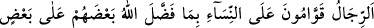
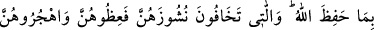
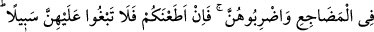

bağışlamasını gerektiren davranışlarından biri de hiç şüphesiz müslüman kardeşinin
gönlünü sevinçle doldurmandır.”[18]
Şeyh Necmeddîn Kübrâ, bu âyeti şöyle tefsir ediyor: “Yeminlerinizin bağladığı
kimselere,” yâni irâde ve dosdoğru bir ilticâ ile yeminleşerek, aranızda Allah için
kardeşlik akdi cereyan etmiş bulunan kimselere, Allah Teâlâ’nın ilim ve hikmetiyle size
emânet ettiği “nasîblerini” şeyhlik ve seyr ü sülûk şartlarına uygun olarak onlara
nasihat edip iyiliğini isteyerek, güzel terbiye ederek, onlara özen göstererek ve
faydalarını gözeterek “verin.” “Çünkü Allah herşeyi” nereye ve kime emânet etmişse
onu “görmektedir.” Kıyamet günü emânetleri yerlerine verme konusunda hıyânet
edenlerin aleyhine şâhitlik edecek, emânetleri size de soracak, emânete riâyet ettiğiniz
için sizin lehinize şehâdet edecek ve size en güzel mükâfâtı ihsân edecektir.”
İşte kâmil insanlar, emanetlere hıyanet etmezler. Bilakis onları, sâhiplerine,
istîdatlarına göre teslim ederler. Bu konuda ehil olmayan kimselere de sır vermezler.
Yoksa Rabbin sırlarına hıyânet etmiş olurlar. Mevlana Celaleddin Rûmî (k.s.) şöyle
diyor:
Hak cânibinden içenler aşk kadehini
İlâhî sırları bilip gizlemişlerdir kendini
İşi sır öğrenmek olan kişinin
Ağzını dikip mühür vurmak gerekir.
Kilit gerekir gönlünde ilâhî sır olanın dudağına
Dudak sâkin, gönül yakın sevdiğine
Kulak, esrâr-ı ilâhiyye dinleyen kulaktır,
Susam çiçeği gibi yüz dili bırakıp dilsiz ol da;
Kimseye söyleme sultânın sırlarını
Avucundaki şekerle tatlandıramazsın denizin sularını
Su kuşundan başkası denize yaraşmaz
Kıymet bil, her şey her yere yakışmaz.
34- Allah’ın insanlardan bir kısmını diğerlerine üstün kılması sebebiyle ve
mallarından harcama yaptıkları için erkekler kadınların yöneticisi ve